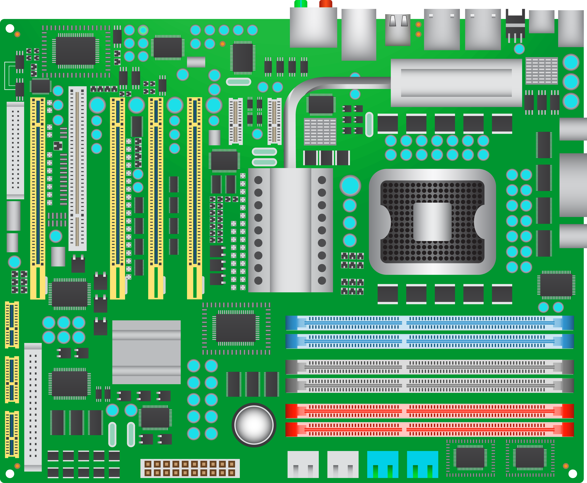

| Процесор | Відеокарта | Материнська плата | ОЗП |
|---|---|---|---|
|
|
 | |
| Intel Core i9-13900K | NVIDIA GeForce RTX 4090 | ASUS ROG Strix Z790-E | Corsair Vengeance DDR5 32GB |
| Флагманський процесор Intel із 24 ядрами та тактовою частотою до 5.8 ГГц. | Потужна відеокарта з 24 ГБ пам'яті GDDR6X для 4K геймінгу. | Материнська плата з підтримкою DDR5 та PCIe 5.0. | Оперативна пам'ять DDR5 з частотою 6000 МГц. |
| AMD Ryzen 9 7950X | AMD Radeon RX 7900 XTX | MSI MAG B650 TOMAHAWK | G.Skill Trident Z5 RGB 32GB |
| Топовий 16-ядерний процесор AMD з підтримкою PCIe 5.0. | Флагманська відеокарта AMD з 24 ГБ GDDR6. | Бюджетна плата на B650 для процесорів Ryzen 7000. | RGB-підсвічування та висока швидкість – 6400 МГц. |
| Intel Core i7-13700K | NVIDIA RTX 4070 Ti | GIGABYTE B760 AORUS Elite AX | Kingston Fury Beast DDR5 32GB |
| Процесор середнього рівня для геймінгу та роботи. | Добре збалансована карта для 1440p геймінгу. | Доступна материнка з Wi-Fi 6 та PCIe 4.0. | Хороше співвідношення ціни та швидкості – 5600 МГц. |